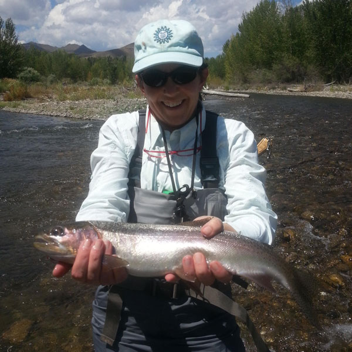

Our Team
Every client is different. Every team should be too.
Upstream Strategic Communications tailors every team for the assignment.
Upstream Founder and President Amanda Deaver leads every account – working closely with clients to develop the right strategy, then building and managing the best team to get the job done.
After nearly 20 years and hundreds of clients, she has established an extensive network of some of Washington’s best independent consultants and practitioners, people who take pride in getting quality results for clients and doing it with integrity. She brings them together and manages the effort with an intense focus on success.
About Amanda
Amanda Deaver is Founder and President of Upstream Strategic Communications. With nearly 20 years of PR agency experience, she has developed and managed effective advocacy and public affairs campaigns as well as crisis and litigation communications programs for clients in nearly every sector.
Amanda’s diverse client roster has included major companies in the financial, health care, energy and defense industries as well as non-profit advocacy organizations, issue coalitions and trade associations. addressing a broad range of issues, from the environment and education to addiction and mental health services.
Prior to launching Upstream in 2015, Amanda co-founded Prism Public Affairs in 2003, which merged with Rasky Baerlein in 2014. Previously, she was a vice president at Powell Tate, a Washington, D.C. public affairs firm.
Earlier in her career, Amanda handled media affairs and program development for several youth-serving organizations and had a brief stint as a substitute high school English teacher at her alma mater, Holton-Arms. She earned her bachelor’s degree from Brown University.

Amanda’s passions extend beyond the client realm. She has served on the board of numerous non-profit organizations including American Rivers, the Chesapeake Bay Foundation, the National Campaign to Prevent Teen and Unplanned Pregnancy, Advocates for Youth and the Kakenya Center for Excellence.
Perhaps most relevant to the Upstream ethos, Amanda is an avid angler when she can get out of the office. Her favorite non-work place to be? Standing in a river with a fly rod in her hand and a smile on her face.